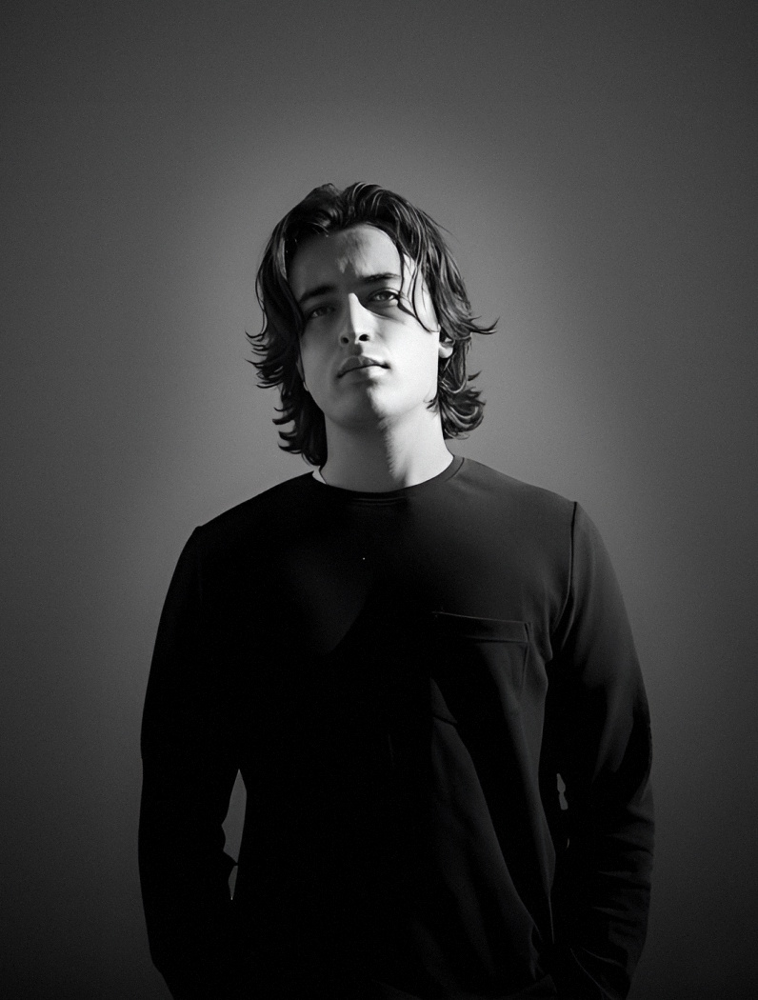

Who am I ?
Bio
Léo Tosku, — years old, living in Cannes, France.
Born in France, I spent part of my life in the Caribbean before returning to Cannes to pursue my studies. I am currently studying Graphic Design at Ynov Sophia Campus, working towards a Bachelor's degree in Digital Project Leadership (Chef de Projet Digital, RNCP 6).
Passionate about digital creation, I focus on graphic design and concept-driven experiences that combine creativity, clarity, and purpose.
My mindset is close to an ENTP profile: I like to challenge assumptions, connect ideas quickly, and turn abstract concepts into concrete solutions. I’m especially energized by brainstorming, debate, and building unconventional approaches that still stay useful.
Alongside my studies, I work on personal and collaborative projects where experimentation and strategic thinking drive the process. I aim to create work that is original, relevant, and impactful. For more information, please contact me on leotoskuepro@gmail.com.
Interests
Creative development • Open source • Digital development • Finance
